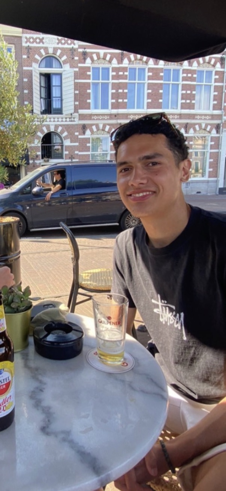

Over ons
Wij zijn drie hogeschool studenten die graag een leuke podcast wilde maken voor leeftijds genoten.

Daan de Jong
Ik ben Daan de Jong en ik ben achttien jaar oud. Ik hou van voetballen en gezellige dingen doen met vrienden en familie. Met deze podcast hopen wij studenten te amuseren op een manier die niet veel tijd en energie kost.
Serra Dekker
Zelf luister ik ook vaak podcasts, voornamelijk wanneer ik in de trein naar school zit of bezig ben met huiswerk maken. Mijn voorkeur gaat zelf uit naar podcasten zoals Broers (amuserende praat podcast) vandaar ook dat een Top 10 Lijstjes podcast mij een erg leuk idee leek.
